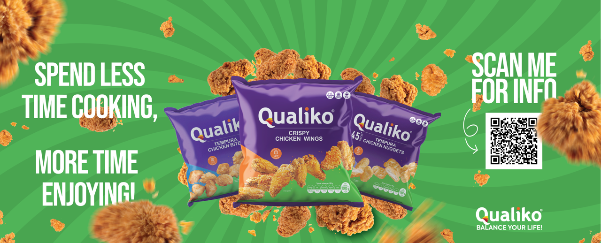
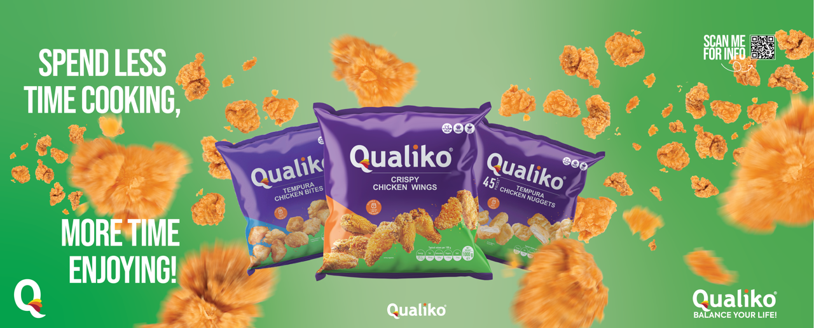
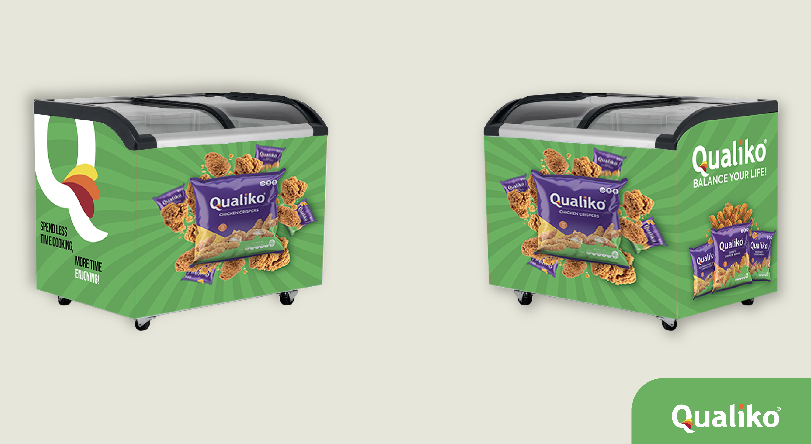

Role
Graphic designer
Timeline
3 weeks
Tools
Adobe Illustrator, Photoshop
Type
Internship project
Created a visual design for Qualiko Freezers to showcase their food products in a clean, modern way.

Graphic designer
3 weeks
Adobe Illustrator, Photoshop
Internship project
I worked with Qualiko, a company that sells frozen chicken products. The goal was to design stickers for the inside and outside of freezer units that are used in stores.
The main challenge was to create a design that would stand out in a busy supermarket environment, while still fitting the Qualiko brand. The stickers needed to be attractive, clear, and easy to understand from a distance. Customers should immediately recognize the product and feel confident about its quality.
My approach was focused on clarity, brand consistency, and visual impact. I started by studying Qualiko’s existing branding, packaging, and tone of voice. From there, I developed several design directions that matched their identity. Through multiple rounds of sketches and digital concepts, I explored different color combinations, typography styles, and image placements. I tested how the designs would look on real freezer surfaces and from different viewing distances.
Based on feedback from the client, I gradually refined the designs. I chose bold visuals, clear product photography, and strong contrast to improve visibility. The final stickers combined recognizable brand elements with a clean layout that guided the viewer's eye toward the main message. The final result was a set of freezer stickers that improved product visibility, strengthened brand recognition, and worked well in a real retail environment.

Other variation
The project started with research into supermarket layouts, competitor freezer designs, and consumer behavior in frozen food aisles. I analyzed how other brands used color, imagery, and messaging to attract attention.
I created mood boards and early concepts to explore different visual directions. These were presented to my supervisor and the client for feedback. Many ideas were adjusted or rejected, which led to a process of trial and error.
User and client feedback played a major role. Some designs were too busy, others were not visible enough from a distance. Based on this input, I simplified layouts, increased contrast, and improved hierarchy. Throughout the project, I worked in short iteration cycles: design, present, receive feedback, improve. This helped me develop stronger communication skills and taught me how to translate client wishes into practical design solutions.

Final mockups